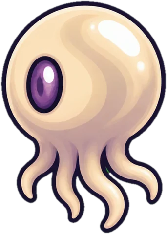

 Water
Water Ghost
GhostTap a stage to read its story.
Jellyx is a tiny cream-white jellyfish with a smooth round bell and a handful of short trailing tentacles that drift behind it like ribbon-ends. At its center, a single deep violet eye regards the world with unreadable calm. It floats through the misty clearings of the light grove as though carried by a current no one else can feel, pausing over flowers and pools to gaze at its own reflection. It does not seem to notice distance or obstacles - walls and branches simply do not interrupt its path. Those who see it say it drifts through light the way dreams drift through sleep.
Field note: Jellyx passes through solid objects with no apparent effort, leaving behind a faint chill and the faintest violet shimmer on the surface.
Light Grove. Jellyx and its family are found in the Light Grove. See everyone who lives there.
Share a Bond Food that matches its types to become friends. Jellyx loves:
A Bond Food is not a trick. It joins your spirit with the Kimuro's spirit, and only when it chooses you.
Print the Kimuro adventure packs: mazes, cards, a board game and Bond Mark medals.
See the printable packs